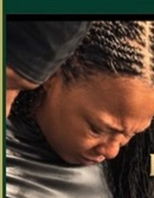

One Umbrella · Many Branches · One Mission
A purpose-driven New York State limited liability company created to bring hope, encouragement, creativity, and support.
Guiding Scripture
“The voice of one crying in the wilderness, ‘Prepare the way of 𐤉𐤄𐤅𐤄; make straight in the desert a highway for our Elohim.’”
Isaiah 40:3 — Yah Scriptures
Our Mission
“To give hope, restore dignity, encourage families, and be a voice for those who feel forgotten.”
One Umbrella · Many Branches
Books, memoirs, inspirational writing.
Stories that carry hope onto the page, so the next person can hold it in their hands.
Faith, prayer, and spiritual encouragement.
Reaching those behind bars, because no one is forgotten and no one is beyond hope.
Wilderness Roots Naturals.
Care for the body, from the earth, the way it was given.
Mental health, justice, and family support.
Standing in the gap for families the system overlooks, and for the mothers crying out.
Family and children’s care services.
A safe place for the little ones while their families stand and fight.
Digital storytelling and inspirational media.
The message, carried in pictures and sound, to whoever needs to hear it next.
A Cry to the Mental Health & Justice System
Mental Health · Justice · Compassion · Hope
Incarceration should never mean being treated like nobody. There are resources for those who recognize and accept their illness — but what about those who don’t understand, don’t accept, or don’t realize they are sick? What about the mothers crying out for their babies!
He gives us the strength to stand in the gap. We cannot keep asking for help while turning our backs on the very people we are crying out for. Trust God, remember to fast, and let His hands be on you.
Push through. Keep praying. Keep advocating. Keep fighting for your children.